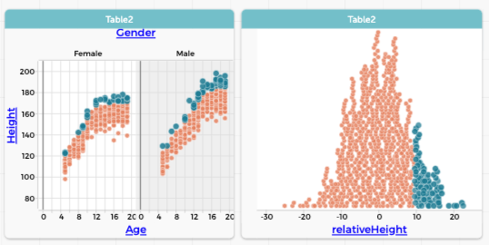
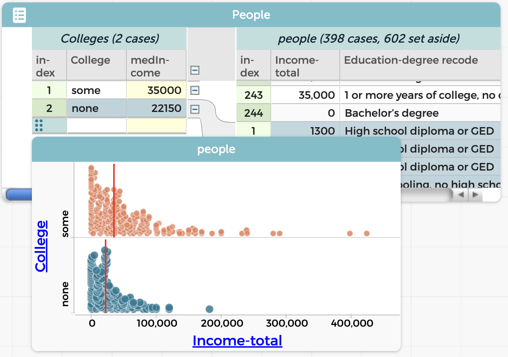
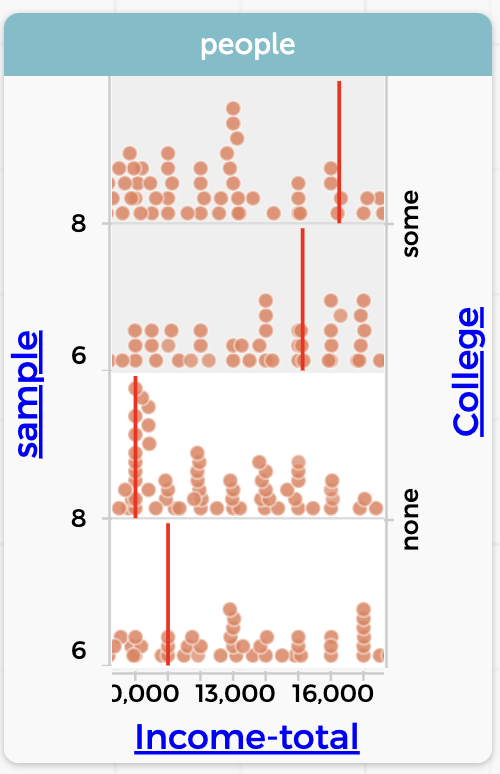

21 Adjustment and Control
In this chapter we discuss adjusting data for trends or baselines, and relate that to “controlling” for variables.
This is inspired by the problem of, for example, using BART data to assess how many people took BART to a game on Wednesday. The naïve student would sum the number of riders over a period of a few hours. That’s good, but you should subtract the number of people who would be taking BART at that time anyway. And how do you determine that? Some ideas:
- Look at a nearby non-game day.
- Look at a non-game Wednesday.
- Look at a lot of non-game Wednesdays.
Adjustment will address ideas such as “adjusted for inflation” and “seasonally adjusted”—means of making fair comparisons when underlying trends change the data values.
As you work thoruhgh these examples, pay attention to what data moves are required. (I will call them out from time to time.)
21.1 Tall for your age (and gender)
Let’s begin with the familiar height data. Suppose we want to identify “tall” children, and we decide that “tall” means, “more than 10 cm taller than the mean height for that age and gender.” We could do a similar thing for “short.”
To do this, we need to calculate the mean height for every age. We did this already (and included Gender as well) in one of our first lessons. We’ll do the same thing now, and use it for more!
In the live example below, do the following:
- That table is taking up way too much space. Make it shorter.
- Drag
AgeandGenderto the left to form groups (grouping move!) - Make a new column called
meanHeightand give it an appropriate formula (summarizing).
Now we have calculated the mean heights for each group. Recall that the high-level values appply to everythiing beneath them in the hierarchy. That means we can use that meanHeight in arithmetic the way we want:
- Make a new column over on the right; call it
relativeHeight. - Give it the formula,
Height – meanHeight. That is, it’s how many centimeters taller (or shorter) you are than the mean in your group. (calculating!)
- Make two graphs:
HeightagainstAgeand then justrelativeHeight. - Split the first graph by
Genderby draggingGenderto the upper “axis.” - Select everybody in the second graph with
relativeHeightgreater than (about) 10.

Notice where the selected people are in the first graph. They’re tall for their age, just as we wanted!
If we went further, we might make another new attribute with values such as tall, short, and normal, that we could use to study, for example, if tall people’s pulse is any different from short. You could make that attribute with a formula, or by using the case-selection capabilities of choosy.
The real point, though, is that we have created an attribute, a relative height, that is adjusted by age. (And we needed a few data moves to do it.)
21.2 Exploring wiggles in CO2
One of the most famous scientific graphs ever is called the Keeling curve, named for its originator, Charles David Keeling. In 1958, Keeling started the program to monitor CO2 on the summit of Mauna Loa in Hawaii. And it wiggles. There is an annual variation.

The main point of he graph is that it’s going up: atmospheric CO2 has increased dramatically over the last 60+ years. In this section, however, we are just going to look at the annual variation.
Here is the plan:
- For every year, we’ll compute the average. We’ll call this
annualMean. - Then for every month, we’ll compute how much it is over or under that average. We’ll call this the
extra.
As you can see, this is very much like computing whether you are tall for your age. The challenge is mostly going to be coping with dates. You can look back at the chapter on dates for help.
If you want to do this all yourself, go to this page on the NOAA site and download the monthly mean data CSV. That file will have all the years; we’ll just use 2010–2020 in the live example below.
Do the following:
- Explore the dataset. Make graphs! The CO2 “mole fraction” in parts per million is the attribute
average. - Drag
yearto the left (i.e., group byyear) and in that area, createannualMeanand give it a good formula. - Back on the right side of the table, make the
extraattribute, and give it the formulaaverage - annualMean.
Now for some additional exploration. What do these new attributes let us do?
- Make a new graph of
extraagainstdecimalDate - Make another graph of
extraagainstmonth. - Plop
yearinto that graph and then, in the menu for that legend attribute, have CODAP treat it as categorical. This way, you get more distinct colors. - In the ruler palette of this last graph, check Connecting Lines.
Now it’s easier to answer questions such as,
- Which month has the highest CO2?
- Is it always that month?
- What is the amplitude of the annual variation?
You can also work to understand, for example, why that first graph, the one against decimalDate, looks the way it does.
In making our extra attribute, we just subtracted out the annual mean. But really, the underlying quantity of CO2 increases throughout the year…so really we should subtract out something that’s also increasing.
That’s worth additional thinking! For some ideas about how to do that, read how they make seasonal adjustment on the NOAA data page where we found the initial graph.
Notice, looking back on this, that we used data moves again, in a similar way:
- we grouped by year,
- we summarized the year to create
annualMean, - we did a calculation to find the
extra.
21.3 How much is college worth?
In this section, we’ll look back at income data using some of the same thinking we used when we looked at gender and income.
We will again use data moves to do our summaries and then to make an adjusted value. To give you a break, I will talk you through the beginning instead of having you do it.
21.3.1 The setup: A first pass
If you get a bunch of Census data (for example, from the Microdata Portal), You will find that people with more education have a higher income.
How much higher? We can calculate that in dollars—though, as we will see, that’s not the only way.
- I used the Microdata Portal to collect 1000 Americans from 2017. Since I am interested in income and education, I make sure to include those attributes.1
- The vanilla sample has people of all ages, so I set aside everyone who was not bewteen 25 and 55. Notice that this is a filtering data move.
Graphing education against income shows, unsurprisingly, that people with more education earn more. But it’s too many catgories to deal with right now, so…
I then made a new attribute,
College, to indicate whether the person had any college. Each person got the valuesomeornone. This is a calculating data move, even though I did not write a formula.Then I made a graph of
CollegebyIncome-total(implied grouping), did the drag-left dance (grouping), and showed the medians (summarizing) to get my result:

If you are shocked by how low those numbers are, yes, it’s surprisingly bad. There are mitigating factors, however:
- If you’re living in a wealthier area, note that this is a national random sample.
- We have not filtered out people who are not working. That makes a difference, but not as much as you might think.
Trying to fix those problems is a job for the a more nuanced extension of this work. In class, this would be a “dig deeper.”
It seems, using this naïve approach, that going to college is worth $12850 a year. We will come back to this in a moment.
21.3.2 Extension: let’s look at 1960 as well
I wondered what we would find in 1960.
Using the Microdata Portal, I can get exactly the same data, but from a different year. In the plugin, I change the year and check the box for Keep existing data.
After I add 1000 people from 1960, I need to filter the age again and set the values of College for the new data. This is straightforward, though it’s interesting: the education categories in 1960 are not the same as they were in 2017—but I can still tell who went to college.
The simplest display of my results shows the problem:

Year the same way I did Gender in the previous section.In 1960, by the same measure, college was worth $1300 per year. But, but… the scales of the two graphs are so different that you can’t really see a fair comparison.
We could look up the consumer price index and calculate the four values in “2017 dollars.” But we will save the CPI for the next example.
Instead, let’s calculate the number that fills in the blank:
For every dollar a person with college makes, a person without college makes only ___ cents.
And that’s easy to do: just divide 22150/35000 (which is 0.633) and 2250/3550 (which is 0.634). So for both years, those who didn’t go to college made only 63¢ for every dollar people who did go to college made.
The takeaway: It was hard to compare the situation in 2017 to the one in 1960, so we changed how we presented the data in order to make a fair comparison. In this case, we used a ratio to express the comparison instead of a straight difference.
21.3.3 Extending further
It was easy to do those divisions usng a calculator (or just Google). But suppose we want to take our study further. Perhaps
- we want to remove the people who are not in the labor force; and/or
- we want to include 1980 and 2000, to see more of the trends; and
- we want to display the 63¢ values in a graph.
If we do that, pretty soon we’re making too many hand calculations. We should get the computer to help.
You know how to do most of these things already (or you can look them up in this book!). But you might not immediately see why we need another layer in the hierarchy, and you might need some help with the formulas.
We will save you from getting to this point and start you out with the dataset already set up with 2017 and 1960.
or use the live example below.
We will also save the explanation for why we’re doing what we’re doing for afterwards. See if you can figure it out as we go!
- Minimize the Microdata Portal for now. You need the screen space.
- Drag
Yearleft to make a new level. - Make a new attribute there, called
cents. - Give
centsa formula to calculate how many cents a non-college person earns for every dollar a college person earns. Here is one possibility, wordy but effective:
100 * median(`Income-total`,College='none') /
median(`Income-total`,College='some')You should see “63” for both Years. Hierarchy works perfectly for us here; the formula does not need to mention the year, because it only applies to the cases attached to that cell in the hierarchy, so that the 1960 value for cents ultimately includes all the people from 1960, and only those people.
Now we can continue:
- Open up the Portal and collect 1000 people from 1980 and another thousand from 2000. Minimize the portal again.
Alas, these new years have not been filtered and massaged the way we did for 1960 and 2017. You’ll have to do that for the new cases:
- Once again, set aside all the people under 25 or over 55. (I use a graph of
Ageto help.) - Drag
Education-degree recodenext toCollege(again) and give any blank cells underCollegeappropriate values ofsomeornone. - Drag
Education-degree recodeback to the right.
Notice the numbers have now appeared in cents. The formula should work for all four values of Year.
- Make a graph of
centsagainstYear. You may need to re-order the (categorical)Years. - Set aside all people who are not
Employed. (Another filter move)
Why did we do all that?
Here is the rationale that would have been impossible to understand if you had not been through this:
It’s all about the hierarchy.
When we began, the file had a bottom layer (on the right), with the people, and an upper layer, where the people were grouped by College. In the Colleges layer, we had the median income for people with and without college. Think about how that made sense: these medians “belonged” to particular values of College and ‘Year’, they’re the medians for the cases some and none— and for all of the cases subordinate to those values.
We wanted to calculate the number of cents people with no college earn. That quantity would apply only to the Year (e.g., 2017), not to the some 2017 or none 2017 sub-groups. Furthermore, the medians for some and none would have to be inside the years, because we needed them to calculate cents.
That meant we needed a new level for Year, above the Colleges level, and we made our new attribute, cents there, comparing college income to no-college.
Onward!
If your experience is like mine, you’ll get values between about 55% and 73%, with no obvious trend. I wondered if I had made some mistake, so I did it over again from the start.
It’s much easier the second time! Especially because you can get all the data first, and do all the filtering and recoding once. You will probably get different results, as I did. A similar range, but a different pattern.

College. Notice how the medians for some and none are over $1000 different in the different samples.In fact, my 1980 data had a value of cents 10¢ different the second time through. And this with a sample of over 50 people in each category! I had imagined that the median value would be more stable—that it would not change as much with a new sample.
One takeaway: once you have done a compicated CODAP analysis, it’s often pretty easy—and illuminating—to redo it completely.
21.3.4 Looking more deeply
Are you disappointed that non-college people always seem to make about 60% of what college people make (in the median)? I was. I had thought that we would see an increasing pay gap between the hoity-toity intellectuals (like myself) and the people who do the real work in this country.
But even a “negative result” is useful.
For one thing, you can use the same data to explore other aspects of social change. For example, what proportion of people in this age range have a college education, as a function of year? All you need is a new column and a new formula. (Use the function count() to get the number of cases in a dataset.)
This dataset also has Sex, which means that you can track gender differences. You should predict first:
- Between 1960 and 2017, how did the proportion of women going to college change?
- Between 1960 and 2017, how did the proportion of women in the workforce change?
- Is that last figure any different when you compare collegiate women to non-?
An investigation like this would be a fine student project. It would not take too long, and there is a lot you can do with it. Many opportunities to dig deeper.
And notice how many data moves you have to use. It gives the students plenty of practice—and possible entries in their data moves portfolio!
21.4 Home prices and CPI
Over the years, houses get more expensive (at least that has been the experience during most of our lifetimes). And at the same time, prices for everything go up. It’s inflation, right? So the question is,
How does the change in home prices compare with inflation?
For our first pass though these data, we will use median home price data from Wisconsin2 and the Consumer Price Index (CPI).
What we will find—and this is typical—is that setting up the data takes a bunch of work and hard thinking, and then the actual math is a single formula that once we have it, we’re done.
Calc students and teachers: the next time you do a typical word problem, keep track of how much of it is the setup—understanding the geometry, drawing the diagram, converting the situation into algebra, and all that—and how much is actually doing calculus.
21.4.1 The setup
This time I will not give you step-by-step instructions for the setup, but here are the basic, big-picture steps—with hints.
Data
You need two files: one with CPI data and one with real estate prices. Here are download links, though they only go up to March 2023. You can go online and get newer material!
- Download Wisconsin housing data
- Download Monthly CPI data
Drag these two files into CODAP, and you will get two tables, one for each .tsv. (That’s “tab-separated value”, by the way, and CODAP understands it just fine. It’s better than using commas here, because some date formats include commas.)
The CPI dataset has, for every month since 1900, the overall urban CPI, which is what news reporters usually use. The actual CPI site at the Bureau of Labor Statistics is an amazing repository of great information, including the ingredients of the CPI. All the way down to the monthly price of eggs.
The CPI number is arbitrary but consistent. It had a value of about 100 in January 1984.
The real estate data from Redfin has month and price, where “price” is the median sale price of a house in thousands of dollars.
Graph these Price and CPI to see that, in fact, the CPI generally goes up, and so does the price of a house in Wisconsin, although there’s an annual fluctuation.
I kinda implied that I was letting you solve all the data-munging problems. Too late, I realized that the .tsv files you download already have the date formats fixed.
If you go out and get your own files, you will have to do that. Remember how? Open the raw download in Google Sheets (or some other capable spreadsheet) and use their vast formatting power to reformat the dates.
Here is the section in the dates chapter if you want to review.
The join and the wrinkle
If you remember the chapter on the joining data move, you might look at the two files and think, “fantastic! I get to do a join! All I have to do is drag Date from the CPI dataset and drop it onto the Month column in the real estate, and the real estate table will now have a column with the CPI!”
Absolutely, except that when you try it 3 nothing happens. It should work, honest! But for now, you need a workaround:
- In each dataset, make a new column with a sensible name such as
when. The two names so not have to be the same. - Use the
number()function to convert the data to a number. So in the CPI dataset, you will enternumber(Date). Very large numbers appear. They are the number of seconds since January 1, 1970. - Now drag the number-i-fied date (
when) from the CPI table to the corresponding column in the real estate table. The CPI column appears in the real estate table.
21.4.2 The analysis
Before you do any calculations, make a graph.
- Plot
PriceagainstMonth. You should see data that’s generally going up from 2012 to 2023, but wiggling every year. - Plot
CPI(from the real estate table) on the same axis. That is, drag it to the vertical axis wherePriceis, and then go “up” and drop it on the plus-outline that has appeared.

Now you see the two graphs; that they fit on the same plot is a fortunate coincidence. It also looks as if housing is rising faster than inflation, that is, faster than the CPI.
What we want now is a new column for adjustedPrice. Clearly it is a calculation that involves Price and CPI. But what should the formula be? I will leave it to you this time, noble reader, but here are some considerations:
- The result should be in dollars, so it’s like the price itself as opposed to some housing-price index…which is what I unwittingly got with my first formula, which was
Price/CPI. (Try it and see!) - The dollars should probably be in either 2023 dollars or 2012 dollars. You can decide, but it will affect the formula.
- Think: should the adjusted price be going up or down? And if you think it should go up, what would have to be true in the data for it to go down?
21.4.3 You want more?
One extension would be to analyze the wiggles as we did in an earlier section on CO2 data.
Or, for a larger dataset that lets you compare regions, download Housing data for all states.